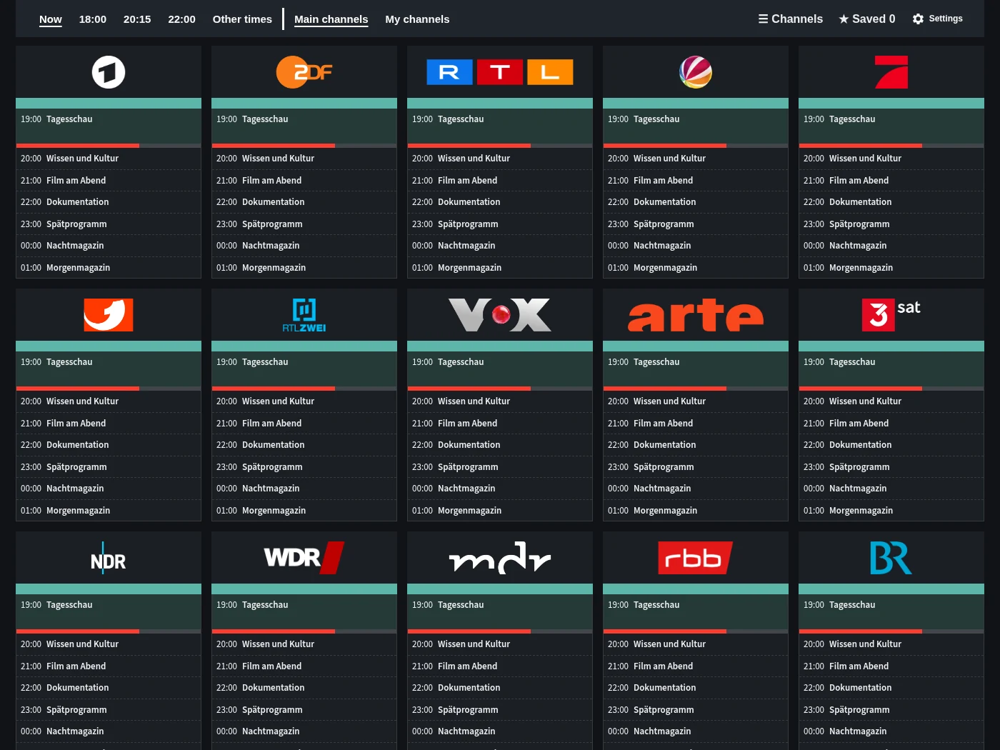
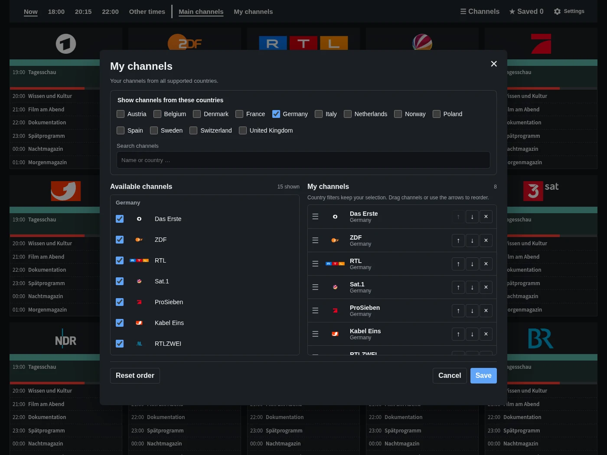
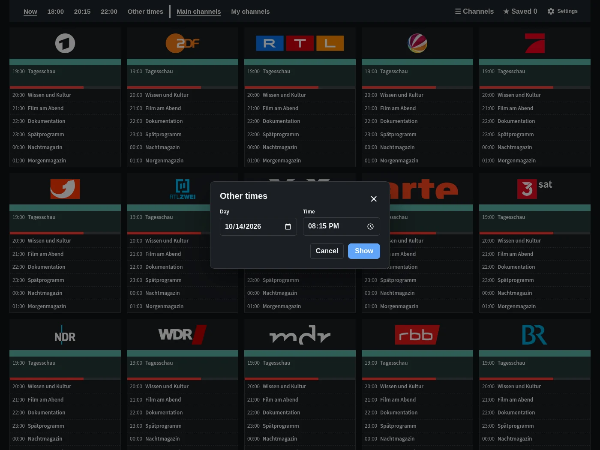
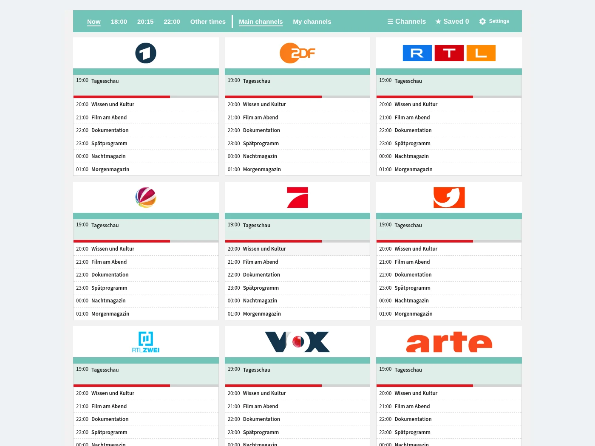

Programme overview
Channels, times and programmes at a glance. Jump straight to now, 18:00, 20:15 or 22:00.
Explore the programme guide, personal channel lists, time selection and the optional dashboard card.

Channels, times and programmes at a glance. Jump straight to now, 18:00, 20:15 or 22:00.

Choose favourites from the supported countries and arrange them in your own order.

Choose another date and time without leaving the guide.

Add TV Guide to your own dashboard. The complete guide is also ready to use in the sidebar.
Example schedules. Programme titles stay in their source language.
Free and directly in Home Assistant.
Open in HACS